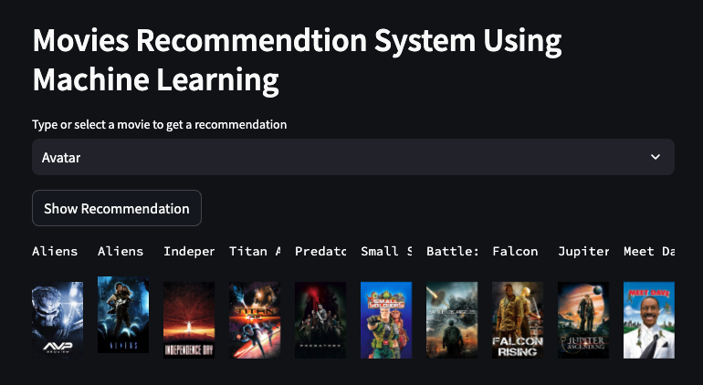

Projects Details
Introduction
This project implements a movie recommendation system. It is divided into three main components: loading the dataset, generating movie recommendations, and creating a frontend application to interact with the recommendations.
1. Load Dataset
The first part of the project involves loading and preparing the movie dataset. We start by importing the dataset from CSV files and then perform data cleaning and formatting. This involves extracting relevant columns such as movie IDs, titles, genres, keywords, cast, and crew. The dataset is processed to create a comprehensive and structured format that will be used for generating movie recommendations.
2. Generate Movie Recommendations
In the second part, we focus on generating movie recommendations based on the processed dataset. The system utilizes Natural Language Processing (NLP) techniques to transform textual data into numerical vectors. By applying algorithms such as cosine similarity, the system compares these vectors to recommend movies similar to the ones the user inputs. This process involves feature extraction, vectorization, and similarity computation to provide relevant movie suggestions.
3. Frontend Application
The final part of the project involves developing a frontend application that allows users to interact with the movie recommendation system. Using Streamlit, we create an intuitive user interface where users can select a movie and receive recommendations. The frontend application displays recommended movies along with their posters, making it easy for users to explore and find new movies based on their preferences.
By combining these components, the project provides a comprehensive movie recommendation system that is both functional and user-friendly. The system integrates data processing, recommendation algorithms, and a responsive frontend to deliver an engaging experience for users.
Project Toolkit
- Python: The primary programming language used for data processing and model building. In the code, Python is used to implement all core functionalities, including data loading, preprocessing, feature extraction, recommendation generation, and frontend application development.
- NumPy: A library for numerical computations in Python. In the project, NumPy is used indirectly via pandas for data manipulation and matrix operations, which are essential for handling large datasets efficiently.
- Pandas: A data manipulation and analysis library for Python. Pandas was used to load the dataset, clean and preprocess the data, and merge data from different sources. It is crucial for managing and transforming the data into the format required for generating recommendations.
- NLTK: A natural language processing toolkit for Python. NLTK is used for stemming the text data, which helps in reducing words to their root forms, improving the quality of text analysis and similarity calculations.
- Scikit-learn: A machine learning library used for implementing machine learning algorithms and metrics. In this project, scikit-learn’s `CountVectorizer` is used to convert text data into numerical vectors, and `cosine_similarity` is used to compute the similarity between movies.
- Streamlit: A library for building interactive web applications in Python. Streamlit is used to create a frontend interface where users can input a movie title and get recommendations. It simplifies the development of the user interface and makes the application accessible through a web browser.
- Pickle: A module for serializing and deserializing Python objects. Pickle is used to save and load the preprocessed movie data and similarity matrix, ensuring that the application can access these objects without needing to recompute them each time.
- Requests: A library for making HTTP requests to external APIs. Requests is used to fetch movie poster images from The Movie Database (TMDb) API, enhancing the frontend application by displaying movie posters along with recommendations.